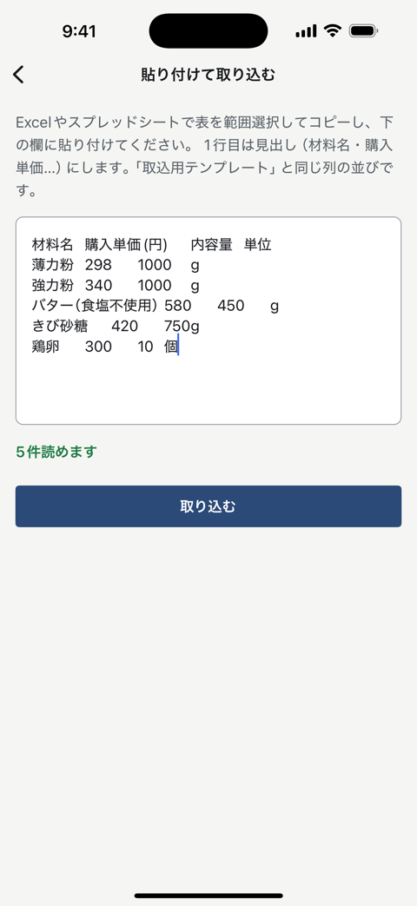

サポートページ
使い方とよくある質問
原価ノートは、お菓子・パンを個人で売っている方のためのiPhone用アプリです。 レシピを1回入れると、原価・原価率・売価と、食品表示ラベル（原材料名・栄養成分）が同時に出ます。
この例の数字
トップページの図と同じ例です。型抜きクッキーを30枚焼いて、1枚180円で委託販売 （＝ お店に置いてもらって、売れたら手数料を引いて受け取る売り方）した場合。 作業は計量から袋詰めまで90分、時給1,100円で数えています。
| 費目 | 1枚あたり | どこから来るか |
|---|---|---|
| 材料費 | ¥26.6 | 歩留まり・製造ロス5%込み |
| 人件費 | ¥55.0 | 90分 × 時給¥1,100 ÷ 30枚 |
| 包装費 | ¥12.0 | OPP袋＋シール |
| 販売手数料 | ¥54.0 | 売価¥180の30% |
| 総原価 | ¥147.6 | 原価率 82.0%（死守ライン50%を超過） |
| 手元に残る | ¥32.4 | 売価¥180 − 総原価 |
アプリの原価画面は合計を1円単位で丸めるので、総原価は¥148と表示されます（内訳は小数第1位まで）。 逆算した売価は10円単位で切り上げます（直販の生の解は¥187.11、委託は¥467.78）。
材料費だけの計算が、現実より安く出る4つの理由
「よく売れているのに、お金が残らない」の正体はここにあります。 同じレシピに、条件を1つずつ足して計算し直したものです。
| 足したもの | 総原価/枚 | 原価率 |
|---|---|---|
| 材料費だけ | ¥25.0 | 13.9% |
| ＋歩留まり・ロス | ¥26.6 | 14.8% |
| ＋人件費 | ¥81.6 | 45.3% |
| ＋包装費・手数料 | ¥147.6 | 82.0% |
- 1. 材料費だけ — 袋の値段を、使った量で割っただけ。 ここで止めてしまう人がいちばん多いところです。
- 2. ＋歩留まりと製造ロス — 歩留まり＝ 買った量のうち、実際に生地へ入る割合。卵の殻や果物の皮は捨てるので、そのぶん多く買うことになります。 製造ロス＝ 割れ・端切れ・焼き損じで売り物にならなくなる分。この例は5%。 買う量は増えるのに、売れる数は増えません。
- 3. ＋人件費（自分の時間） — 90分の作業を時給1,100円で数えて、30枚で割ると1枚55円。 いちばん大きいのに、いちばん忘れられる費目です。原価ノートは人件費を 「あとで足すおまけ」ではなく、最初から原価の一部として計算します。
- 4. ＋包装費と販売手数料 — 袋とシールで12円、委託先の手数料が売価180円の30%で54円。 1枚売って手元に残る32.4円が粗利＝ 売った値段から原価を引いた残りです。
では、いくらで売ればいいのか
原価率を50%までに抑えたい、と決めた場合の売価は、直販（マルシェ・イベント・自分のネット販売）で 190円、委託販売で470円です。委託の手数料は「売価の30%」なので、 売価を上げると手数料も一緒に増えます。だから「原価の2倍」では計算が合いません。 同じクッキーなのに2倍以上ちがう——これが材料費だけの計算では絶対に見えない結論です。 計算の全部をこの記事で追えます。
このページとトップページの数値・図は、アプリと同じ計算エンジン
（アプリの原価計算コードをそのまま束ねた genka.js）を
make-genka-example.mjs で実行して生成しています。手で書き写していません。
原価の計算式
総原価（1個あたり）＝ 材料費 ＋ 人件費 ＋ 包装費 ＋ 販売手数料 です。
材料費は「購入価格 ÷ 内容量 × 使う量 ÷ 歩留まり率」を全部の材料で足し、 それを「1 − 製造ロス率」で割ります。人件費は「作業分 ÷ 60 × 時給」。 販売手数料は「手数料率 × 売価」なので、売価を上げると手数料も増えます。
売価の逆算は「（材料費 ＋ 人件費 ＋ 包装費）÷（目標の原価率 − 手数料率）」で、 答えは10円単位で切り上げます。手数料率が目標の原価率以上だと答えが存在しないので、 その場合はその旨を出します。
材料の値段を1か所直すと、その材料を使う全レシピの原価が変わります。 バターが上がった日に、レシピを1本ずつ開いて直す必要はありません。 材料画面で1回直せば、そのバターを使っているケーキもクッキーもパンも、 原価率と推奨売価がその場で計算し直されます。
Excelで作った材料表は、貼り付けるだけで取り込めます
表をコピーして、アプリの入力欄に貼るだけ。ファイルの書き出しも、転送も、 文字コードの調整もいりません。CSVファイルからの取り込みもできます （どちらも無料の範囲です）。

食品表示ラベル
原材料名を書き出して、多い順に並べ替えて、アレルゲンを拾って、栄養成分を計算して……を 手作業でやると、何度やっても不安が残ります。原価を入れたレシピから、そのまま出せます。
原材料名は、重さの多い順に自動で並びます
法令が求める並び順です。配合を直せば順番も直ります。 仕込み（アーモンドクリームなどの中間レシピ）を使っている場合は、 「名称（内訳…）」の形でかっこの中に展開されます。
アレルゲンは「（一部に小麦・卵・乳を含む）」の形にまとまります
アプリが対応しているのは29品目です。表示義務のある特定原材料9品目 （えび・かに・くるみ・小麦・そば・卵・乳・落花生・カシューナッツ）と、 表示がすすめられている20品目（ピスタチオを含む）。 指定の最新の状況は、消費者庁の公表資料でご確認ください。
アレルゲンは、材料ごとにあなたが設定した内容がそのままラベルに反映されます。 アプリが材料名から推測することはありません。原材料の袋に書かれている表示を見て、 材料画面で設定してください。設定した内容は、その材料を使う全レシピのラベルに反映されます。
栄養成分は5項目。熱量・たんぱく質・脂質・炭水化物・食塩相当量
文部科学省「日本食品標準成分表（八訂）増補2023年」から配合量で計算します。 成分表はアプリに入っているので、通信はいりません。 「1個当たり」と「100g当たり」を切り替えられます。
市販のラベルシールに面付けしてPDFで書き出せます
面付け＝ A4の1枚に何枚ぶんを並べて印刷するか。 A4・12面（エーワン72212等）、A4・24面（同31540等）、単票の3つ。 シールの実寸には栄養成分の枠まで入らないので、 12面・24面は一括表示だけ、栄養成分まで入れるときは単票という分け方です （実寸で確かめてあります）。 印刷するときは倍率100%（原寸）を指定してください。「用紙に合わせる」だと位置がずれます。
無料でもPDFの書き出しはできますが、「サンプル - 原価ノート」の斜めの透かしが入ります。 透かしなしで出せるのはProです。
法令まわりの注意
栄養成分の値は、成分表から計算した推定値です。 これは食品表示基準がきちんと認めている方法で、分析機関に検査を出さなくても表示できます。 その代わり「この表示値は、目安です。」の一文を近くに書くことが条件なので、 アプリはこの一文を必ず枠内に入れます。消し忘れは起きません。
根拠資料は、別途ご自身で控えてください
計算の根拠（どのレシピを、どの配合で、どのデータベースから計算したか）は 保管しておく必要があります。アプリに入れたレシピのデータはそのもとになりますが、 アプリが書き出すPDF・CSVには、参照した成分表の名前・版・計算した日付が入りません。 「日本食品標準成分表（八訂）増補2023年」と計算日は、別途控えておいてください。
また、表示の最終的な責任は販売者であるあなたにあります。 必要な表示の項目は、販売の形態（対面か、包装して置くか、通信販売か）や 自治体によって変わります。売り始める前に、最寄りの保健所に一度確認してください。 原価ノートは、計算と印字を手伝う道具に徹しています。
無料とProの違い
原価計算そのものは、無料版でも全機能が使えます。
無料でできること
- レシピ5件まで（はじめから入っているサンプルは数えません）
- 原価計算は全機能（歩留まり・製造ロス・人件費・包装費・販売手数料・売価の逆算・原価率の判定）
- 食品表示ラベルの内容はすべて見られます。PDFの書き出しもできますが、「サンプル」の透かしが斜めに入ります
- 材料表の貼り付け取り込み・CSV取り込み
- iCloud同期・バックアップの書き出しと取り込み
原価ノート Pro（買い切り ¥980）
- レシピ数の制限がなくなります
- ラベルPDFの透かしが消えます。そのまま印刷して商品に貼れます
- レシピ一覧CSV・材料CSVの書き出し（総原価・原価率・粗利までの列。会計や棚卸にそのまま貼れます）
- 一度買えば終わり。期限も月額もありません。サブスクリプションはありません
価格は App Store の表示が正です。表示された金額をご確認のうえお求めください。
食品表示の法令は変わります。改正への追従は、月額をいただくのではなく 無料のアップデートで行う方針です。
よくある質問
買ったのに、無料版のままです
購入したときと同じApple IDでサインインした状態で、 設定タブ →「Pro」の「Proを購入 / 復元」→「以前の購入を復元」 を押してください。
購入はApple IDに紐づいているので、機種変更しても、アプリを入れ直しても引き継がれます。 追加の料金はかかりません。それでも戻らない場合は、下の連絡先へご連絡ください。
ラベルの栄養成分表示は、そのまま商品に貼れますか
栄養成分の値は、文部科学省「日本食品標準成分表（八訂）増補2023年」から計算した 推定値です。食品表示基準が認めている方法で、 「この表示値は、目安です。」が常に併記されるので、 分析機関に出さなくても適法に表示できる形になっています。
ただし表示の最終責任は販売者（あなた）にあります。 販売の形態によって必要な表示は変わりますので、迷ったら最寄りの保健所や 消費生活センターに確認してください。
アレルゲンは自動で判定してくれますか
いいえ。アレルゲンは、材料ごとにあなたが設定した内容がそのままラベルに反映されます。 アプリが材料名から推測することはありません。
原材料の袋に書かれている表示を見て、材料画面で設定してください。 なお、材料CSVの取り込みではアレルゲンは変わりません（材料画面で設定します）。
通信やアカウント登録は必要ですか
いりません。アカウント登録はなく、計算はすべてiPhoneの中で動きます。 成分表もアプリに入っています。通信を使うのは、App Storeでの購入処理と、 あなた自身のiCloudへの同期だけです。工房に電波が入らなくても計算できます。
機種変更やデータの控えはどうなりますか
レシピ・材料・時給の設定は、同じApple IDのiCloudへ自動で保存されます（無料）。 新しいiPhoneでアプリを入れて、設定タブの「今すぐ同期」を押せば戻ります。
iCloudの中でも、開発者からは見えない・触れないあなた専用の領域に置かれます。 念のため、設定タブから「バックアップを書き出す」でファイルとして控えておくこともできます。
計算がおかしい気がします
ぜひ教えてください。材料の購入価格・内容量・配合量と、 アプリに出ている値を書いて送っていただければ、手計算と突き合わせて確認します。
いちばん多いのは、材料の単位（g・ml・個）が配合の単位と食い違っている場合と、 歩留まり率が100%以外に設定されている場合です。
連絡先
質問・不具合の報告・計算や表示の指摘は、こちらへどうぞ。
個人で作っています。全部読みます。返信に1〜2日いただくことがあります。 「こういう表示項目が要るのに出せない」「この材料の成分表の食品番号が分からない」など、 使っていて詰まったことも歓迎です。
プライバシーポリシー（何も収集していません）